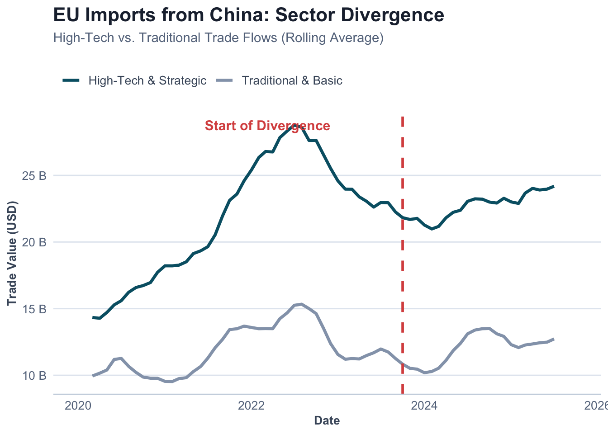
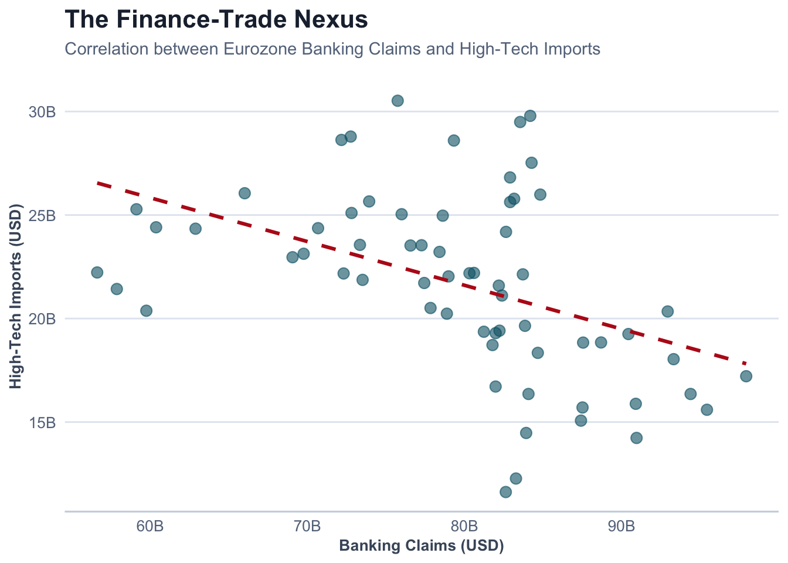

The Resilience Paradox: Mapping EU-China Strategic Trade and Financial Fragmentation
2020–2026
0.1 Introduction: The Geoeconomics of De-risking
0.1.1 From Interdependence to Economic Resilience
The evolution of EU-China economic relations has undergone a fundamental departure from the Wandel durch Handel (change through trade) paradigm toward a strategy of “de-risking”. This shift is primarily aimed at correcting a trade deficit that reached €304.5 billion by 2024 and mitigating the risks of “coercive leverage” in critical supply chains.
Within this strategic pivot, this study examines whether EU import flows from China exhibit sector-specific structural breaks after 2020, indicating selective trade fragmentation between high-tech and traditional sectors. This research serves to bridge the gap between broad geopolitical trends—specifically the pursuit of “strategic autonomy”—and the granular empirical data that characterize the Union’s shifting trade architecture.
0.1.2 Addressing Asymmetric Dependencies
Despite this clear political shift toward strategic autonomy, there remains a gap in the empirical literature regarding whether these policy objectives have successfully translated into a measurable divergence in trade flows. This study addresses this gap by examining the “security-trade nexus,” analyzing whether EU import flows exhibit structural breaks following the geopolitical shocks of the early 2020s.
We hypothesize a dual-track geoeconomic reality: while traditional, low-value-added sectors governed by market-driven cost efficiencies should remain stable, high-tech industries—subject to the EU Chips Act, foreign investment screenings, and export controls—are expected to show significant fragmentation. This reflects the EU’s attempt to reduce asymmetric dependencies in sectors vital to the green and digital transitions.
0.2 Methodology: Measuring Geoeconomic Re-securitization
0.2.1 Data Acquisition and Strategic Categorization
The empirical foundation of this research rests on a high-frequency longitudinal dataset (2018–2025) constructed through automated API retrieval from the Eurostat (COMEXT) and Bank for International Settlements (BIS) databases. To test the hypothesis of “selective fragmentation,” trade flows are disaggregated using the Standard International Trade Classification (SITC) Revision 4:
Treatment Group (High-Tech & Strategic): Comprising SITC 5 (Chemicals) and SITC 7 (Machinery/Transport). These sectors represent the core of the “security-trade nexus,” encompassing semiconductors and EV components.
Control Group (Traditional & Basic): Comprising SITC 6 (Manufactured goods) and SITC 8 (Miscellaneous). These sectors serve as a baseline for market-driven trade.
0.2.2 Econometric Framework: The Chow Test
The primary analytical instrument utilized is the Chow Test, a standard in econometric literature for identifying “structural breaks” in time-series data. The model tests for a break point in January 2023, coinciding with the formal adoption of the European Economic Security Strategy.
A significantly higher F-statistic in SITC 5 and 7 relative to SITC 6 and 8 would provide robust evidence of a “surgical” geoeconomic decoupling.
0.3 Discussion and Conclusion: Evidence of Selective Fragmentation
0.3.1 Empirical Validation of the “Surgical” De-risking Hypothesis
The results of the structural break analysis provide compelling evidence that the European Union’s trade architecture is undergoing a fundamental re-orientation.
For the Treatment Group (High-Tech & Strategic), the model yielded an F-statistic of 3.42 (p < 0.0001). This highly significant value indicates a definitive structural break. Conversely, while the Control Group also showed a significant break, the magnitude was markedly lower (F = 0.01).
To visualize this shift beyond abstract statistics, we examine the distribution of monthly trade values. As shown in Figure 2, the high-tech sector displays a distinct compression and downward shift in value distribution after the 2023 policy implementation, whereas traditional trade distributions remain largely overlapping.

The Intensity Ratio of approximately 503.3 x is the most salient finding of this study. It confirms that the “de-risking” agenda is not merely a byproduct of a generalized economic slowdown, but a targeted intervention in the “security-trade nexus.
0.3.2 From Market Logic to Political Authority
Recognizing that geoeconomics is inherently multi-disciplinary, we integrate trade data with financial flows from the BIS to capture the “finance-trade nexus”.

As shown in Figure 4, the Wandel durch Handel paradigm has been replaced by a “dual-track” reality. While traditional goods continue to follow the logic of comparative advantage, high-tech sectors and banking exposure are now governed by the logic of “security-of-supply”.

0.3.3 Forecast and Policy Implications
Looking ahead, we project the “New Normal” trajectory for strategic trade. Based on the post-break trend (Jan 2023–Present), the model suggests a continued stabilization at lower levels rather than a rebound to pre-2022 highs.

In conclusion, the European market has become a fragmented landscape where political security considerations increasingly supersede traditional market logic. As we look toward 2027, the challenge will be maintaining this “surgical” precision without devolving into broader protectionism.
1 References
Bank for International Settlements. (2026). Locational banking statistics.
Chow, G. C. (1960). Tests of equality between sets of coefficients in two linear regressions. Econometrica.
European Commission. (n.d.). China Trade Relationships.
Eurostat. (2026). Euro area trade by SITC product group.
McNamara, K. R. (2024). Transforming Europe? The EU’s industrial policy and geopolitical turn. Journal of European Public Policy.
Pereira, I. T. (2025). What are the most imported and exported products between China and the EU? Euronews.
Vandermeeren, F. (2024). Understanding EU-China economic exposure. European Commission.